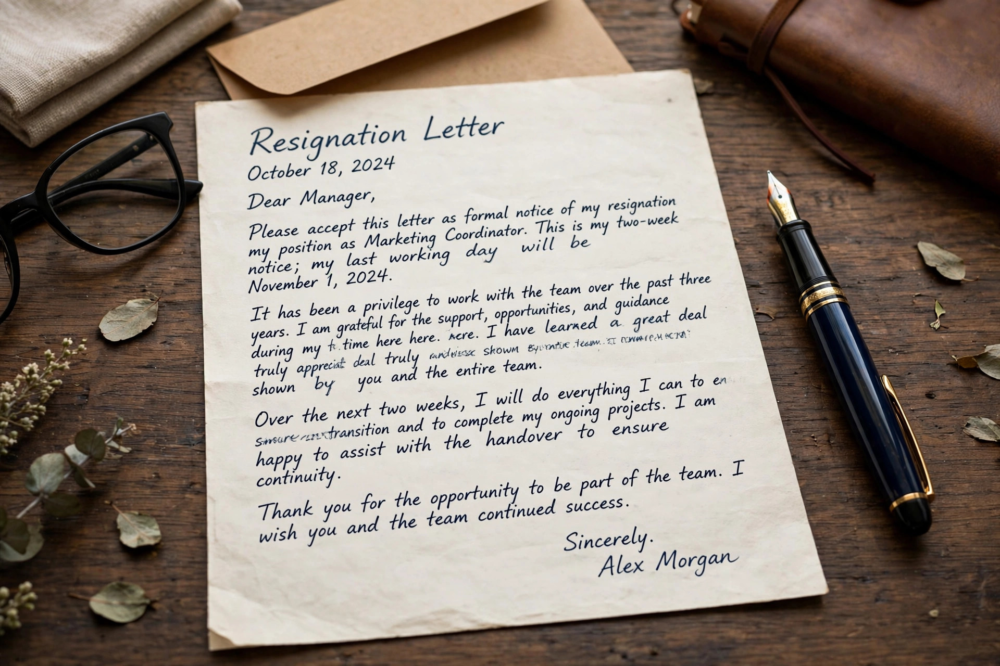

A resignation is the formal act of giving up or quitting one's office or position. A resignation can occur when a person holding a position gained by election or appointment steps down, but leaving a position upon the expiration of a term, or choosing not to seek an additional term, is not normally considered a resignation.
When an employee chooses to leave a position, it is considered a resignation, as opposed to involuntary termination. Whether an employee resigned or was terminated is sometimes a topic of dispute, because in many situations a terminated employee is eligible for severance pay and/or unemployment benefits, whereas one who voluntarily resigns may not be eligible.

A handwritten resignation letter on a desk beside a fountain pen.
In politics, resignation may occur as a result of scandal, ill health, loss of the confidence of colleagues, or acceptance of responsibility for failure. Famous political resignations include that of U.S. President Richard Nixon in 1974, amid the Watergate scandal — the only resignation of a U.S. president — and those of numerous prime ministers who stepped down after losing party support. In parliamentary systems, ministers are often expected to resign under the convention of individual ministerial responsibility.
A resignation addressed to a legislature or head of state may or may not be effective immediately, and some offices require formal acceptance. The holder of an office may also offer a resignation strategically — for example, a prime minister tendering the resignation of the whole government to force an election or a cabinet reshuffle.
Employees commonly give notice of resignation — two weeks is customary in the United States — and submit a written letter of resignation to their employer. Employment contracts and collective agreements may specify longer notice periods, notice pay, and the treatment of accrued leave. A "resignation in lieu of termination" or constructive dismissal situation arises when an employee is given the choice to resign or be dismissed.
Employment law texts and political histories of notable resignations.